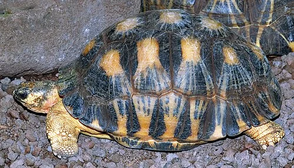

Havssköldpaddor
Havssköldpaddor lever i havet och har simfötter istället för ben...
Landsköldpaddor

Landsköldpaddor lever på land och kan bli mycket gamla...
Chelonia mydas

Grön havssköldpadda är en av de största arterna...